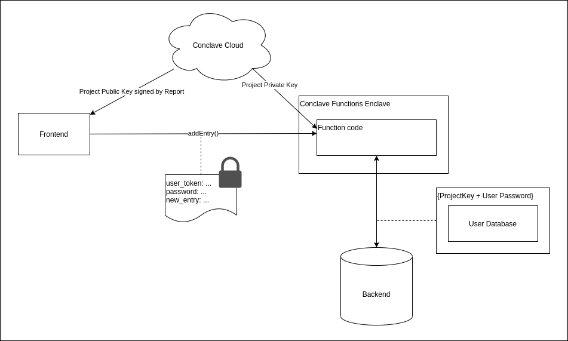

Conclave Pass - Password Manager implemented using Conclave Cloud
Conclave Cloud provides a password manager as a sample application. You can get the application's code from this GitHub repository.
Sample description
The Conclave Pass repository contains a set of projects that together implement a basic password manager service that demonstrates how to use Conclave Cloud services to provide a privacy-preserving backend to an application.
The end user can interact with the password manager service using both a web-based frontend implemented with Angular, and a command-line tool written in Kotlin.
How do existing password managers work?
Password managers maintain a database of password entries that are all protected by a single master password or access key. The password database contains sensitive information that the user wants to keep private. Even the password manager service administrators shouldn't be able to access entries within the database.
Password managers typically solve this privacy problem by storing the database using at-rest encryption in a cloud database. When users access the database on a new device, the application synchronizes a cloud copy of the entire database to the device. The user can then perform all database operations in the client application or the web browser.
For example, you can find the architecture used by LastPass here.
This approach is secure but has some limitations:
- If the database grows large, it may take significant network bandwidth/storage on the endpoint device.
- There is no opportunity for sharing or collaboration on database entries.
For password managers, these are not actual limitations, but this demo project shows that you can use Conclave Cloud to solve these two issues in other types of applications by accessing the database inside an SGX enclave on the cloud.
What's the architecture of the ConclavePass app?
The following diagram illustrates the architecture of the ConclavePass application.

The components in the diagram are named corresponding to the Conclave Pass directory that contains its implementation.
These components are described below:
Functions
The functions component consists of a typescript module that provides methods that you can use to add, query, get, and remove entries within the user's database. This component requires access to the unencrypted database, and therefore, to ensure privacy, runtime encryption is used by hosting the functions within Conclave Cloud in the Conclave Functions service.
Conclave Functions are stateless and do not have access to any persistent storage. Therefore, external storage
within the cloud is necessary to persist the user databases. The functions component uses the JavaScript
fetch() built-in capability to query and update an external data store with each user's encrypted database entries.
It is critical to encrypt any data exchanged via fetch() as the request comes from outside the Intel SGX enclave of
Conclave Functions.
The Functions module uses another built-in function, crypto.getProjectKey() to get a key unique to the project and
function code and uses this key to encrypt/decrypt the user's database before exchanging it with external storage.
Backend
The backend service stores and retrieves the encrypted database for each user. The encrypted data it handles can only be accessed within the functions component, ensuring that no unauthorized entity can access the user databases.
The simple implementation provided within this project consists of a Spring application that stores the databases in a key/value map in memory. All entries are lost if the service restarts.
Frontend
The front end is a web application that allows login/logout and management of user keys. This web application implemented using the Angular framework demonstrates how you can interact with Conclave Functions using the Conclave Cloud JavaScript SDK.
Command Line Interface (CLI)
The CLI is a terminal-based tool written in Kotlin that allows login/logout and management of user keys. This tool demonstrates how you can interact with Conclave Functions using Conclave Cloud's Kotlin/Java SDKs.
How is privacy preserved?
With the ConclavePass solution, the only component that can access the user databases in an unencrypted form is the function code that runs within the Conclave Functions service.
But how do we ensure that is the case?
Conclave Cloud ensures that only authorized function codes can access data. It does this by running the code within an Intel SGX enclave and providing an attestation to prove platform validity, code integrity, and code authenticity. The Conclave Cloud platform and the client SDKs handle the details of this whole process.
Let's look at how a user sends a password to the service. The front end or the CLI calls the addEntry function,
passing the user's password and details of the new password entry. Conclave Cloud encrypts this information using a
key that is only accessible to the set of functions that the user has approved to handle the user's database.

The Conclave Cloud client SDK obtains a public key from the platform signed by a report proving that the private key can only be accessed within an approved Conclave Functions enclave. The client SDK validates the report and ensures the key signature matches the report's signature. After validating the key, Conclave Cloud encrypts data using this key, safe in the knowledge that only a valid Conclave Functions enclave can decrypt it.
The password entry is encrypted using this key, and the addEntry function is invoked. The encrypted password is then
picked up inside a Conclave Functions enclave which can decrypt the parameters using the private key that only it
has access to. The function retrieves the encrypted user database from the external service.
Once the function has the user's encrypted database, it decrypts it. The key used to encrypt/decrypt the enclave is derived from many sources, all of which need to be present to obtain the correct key:
- The project key. This is the same key used to decrypt the function code and the invocation parameters provided to the function.
- The hash of the code that is executing. Mixing this into the encryption key ensures that if someone modifies the code, it cannot access the database.
- The user's password. It ensures that one user cannot access the database for another user.
The function decrypts the database, adds the new entry, re-encrypts it, and sends it back to the backend.
So, you can see that the only entity that has access to all the secrets required to access each user's database entry is a Conclave Function running the exact code the user expects it to run and when it has the user's password.
Building and deploying the demonstration
You must host each of the below components to run the demonstration.
1. Backend
The backend service needs to be available with a fixed IP on the internet to allow Conclave Functions to access it for storing user databases.
Conclave Cloud recommends setting up a new virtual machine with your cloud service provider to host this. You can choose a VM with the smallest size, as the resource requirements are minimal.
- Build the service using this command:
./gradlew build
-
Deploy the
build/libs/conclavepass-0.0.1-SNAPSHOT.jarfile to your VM. -
Run the backend service with this command:
java -jar ./conclavepass-0.0.1-SNAPSHOT.jar
2. Functions
-
Note down the IP address for the backend service that you have just deployed, and update the functions module to connect to the service with that address in
functions/src/index.ts. -
Follow the instructions in functions/README.md to set up a Conclave Cloud project and build and deploy the functions ready for use.
3. Frontend
-
Download and unzip the Conclave Cloud JavaScript client SDK and update the frontend project to use your local copy.
-
Build and run the front end.
You can find detailed instructions here.
Once the front end is running, you can access it at http://localhost:4200.
4. Command Line Interface (CLI)
-
Download and unzip the Conclave Cloud Java client SDK and update the CLI project to use your local copy.
-
Build and run the CLI.
You can find detailed instructions here.
Usage notes
This sample is only a demo of a password manager application. It provides only basic functionality and error handling. There are a few things to note when you try the demo.
The username is used as the user token
When you enter your username, Conclave Cloud runs it through a SHA256 hashing algorithm and converts it to a hex string. This hex string acts as the token for the user. The backend service stores and retrieves encrypted databases using this token.
The password is fixed on the first access
The first time a user token is used, there is no entry within the backend service. So, it returns an empty string. The functions component assumes this is a new user and creates an empty database encrypted with the current password. All subsequent access must use the same password. So the user cannot change the password later.
Incorrect passwords are not handled well
If you enter an incorrect password, the decrypt function returns invalid data within the functions component. The sample app doesn't handle this invalid data well, and the JavaScript code fails. This behavior serves the purpose of protecting the database but is not a good user experience. This is something that can be improved in the demonstration code.
The database is not persisted
As mentioned above, restarting the backend service clears all user data. This behavior is useful for demonstration purposes. However, you should not use this sample application for real-world password management because of the risk of data loss.